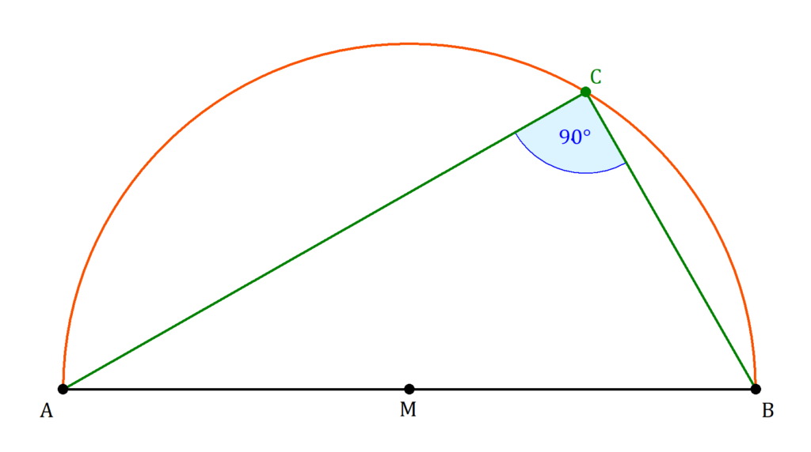
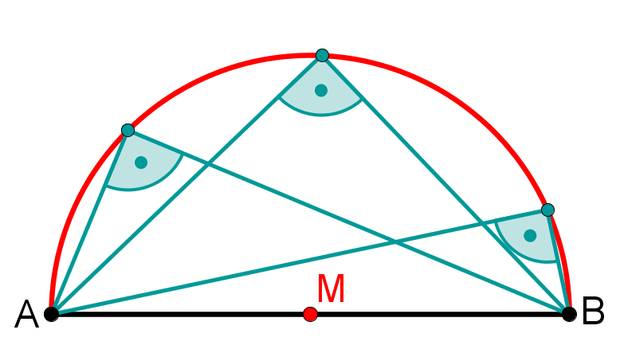

Bewege die blauen Punkte
Beobachte: Was verändert sich? Was bleibt gleich?
Formuliere den Satz des Thales in deinen eigenen Worten.
Kontrolliere anschließend und verbessere notfalls.
Diese Begriffe könnten dir helfen, den Satz zu formulieren.
Wenn ein Punkt C eines Dreiecks ABC auf einem Kreis mit dem Mittelpunkt M und dem Durchmesser AB liegt, dann hat das Dreieck am Punkt C einen rechten Winkel.
Wenn ein Punkt C mit zwei Punkten A und B ein rechtwinkliges Dreieck bildet, dann liegt der Punkt C auf einem Kreis mit dem Durchmesser AB.
